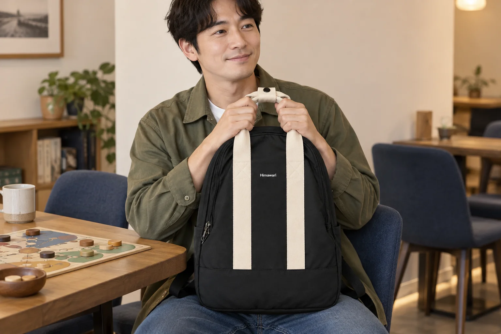
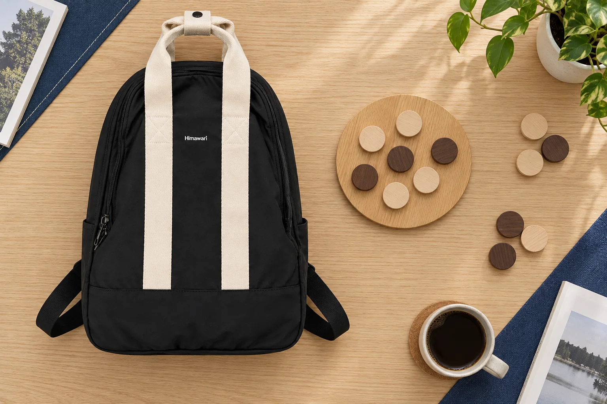

블랙 백팩의 아이보리 웨빙, 단색 가방과 다른 코디 기준

검은 백팩을 찾는 이유가 옷에 쉽게 맞추기 위해서라면, 가방에서 검은색이 아닌 부분도 봐야 합니다. No.2505 블랙의 실제 제품 사진에는 아이보리색의 넓은 띠 두 줄이 앞면을 세로로 지나갑니다. 위에서는 같은 색 손잡이가 이어지고 가운데에는 작은 흰색 로고가 놓여 있습니다. 검은색이 바탕을 이루지만, 옷과 함께 보았을 때 눈에 먼저 들어오는 부분은 사람마다 다를 수 있습니다. 이 제품을 단색의 검은 백팩과 나란히 고른다고 생각하면 비교할 지점이 더 구체적으로 드러납니다.
밝은 띠가 차지하는 자리를 먼저 보기
정면 사진에서는 몸판의 둥근 외곽선 안쪽으로 두 개의 밝은 세로선이 보입니다. 띠가 앞면의 일부만 짧게 장식하는 모양과 달리 아래쪽 검은 패널이 시작되는 곳까지 이어집니다. 그래서 색상 선택을 할 때에도 검은 면과 밝은 띠의 간격을 함께 보게 됩니다. 작은 화면에서는 띠가 가늘게 보일 수 있으므로 제품을 화면에 크게 띄워 앞면을 살펴보세요. 이때 화면을 확대한 사진과 원래 크기의 사진을 번갈아 보면 세부 모양과 전체 인상을 따로 읽을 수 있습니다.
손잡이와 앞면의 띠를 하나의 밝은 부분으로 보면 위에서 아래로 이어지는 모양이 더 잘 보입니다. 손잡이가 짧게 보이는 정면과 위쪽을 내려다보는 사진을 번갈아 살펴보세요. 로고만 밝은 단색 백팩과 비교한다면, 작은 로고의 위치와 넓은 띠가 차지하는 면적이 각각 다른 질문이 됩니다. 옷에 작은 밝은 부분만 더하고 싶은지, 가방 앞면에 긴 선이 드러나기를 원하는지 나누어 볼 수 있습니다.

무늬 없는 겉옷과 줄무늬 겉옷에 대입하기
가상의 출근복 두 벌을 비교해볼 수 있습니다. 하나는 무늬 없는 차콜색 코트이고, 다른 하나는 흰색 세로줄이 들어간 짙은 재킷입니다. 코트에 가방을 겹쳐보면 밝은 손잡이와 앞면 띠가 별도의 선으로 보일 수 있습니다. 재킷과 함께 보았을 때에는 옷의 줄무늬와 가방의 띠가 동시에 눈에 들어옵니다. 어느 조합이 더 낫다는 규칙을 세우기보다 자신이 옷의 무늬를 살리고 싶은지, 가방을 눈에 띄게 쓰고 싶은지 비교하는 편이 선택에 도움이 됩니다.
이 비교는 실제 제품을 입어본 후기나 색상 실험이 아닙니다. 가지고 있는 겉옷을 침대에 펴고 제품 정면 사진을 가까이 두는 정도로도 시작할 수 있습니다. 사진 속 아이보리와 실제 옷의 흰색이 정확히 같다고 생각할 필요는 없습니다. 촬영 조명과 화면 설정에 따라 색이 다르게 보이므로, 우선 밝은 부분의 크기와 위치를 보는 비교로 사용하세요. 색을 정확히 맞추는 것이 중요하다면 실제 제품을 확인할 기회를 남겨두는 편이 좋습니다.
가방의 앞면이 보이는 순간도 다르다
백팩을 등에 멘 상태에서는 함께 걷는 사람이나 뒤에서 보는 사람이 앞면 배색을 보게 됩니다. 자신은 거울로 몸을 돌려보거나 손으로 들어 앞에 놓았을 때 그 면을 보게 됩니다. 지하철에서 가방을 내려 손으로 들거나 카페 의자 옆에 놓는 날이라면, 등을 향한 모습만으로 조합을 고르지 않아도 됩니다. 이 글의 AI 연출 사진도 가방의 손잡이를 잡고 앉은 장면입니다. 모임의 소품보다 가방의 앞면과 손잡이가 몸 앞에서 차지하는 위치를 보는 자료로 읽어주세요.
실제 제품 사진에는 밝은 손잡이 두 개를 모으는 작은 고정 부분이 보입니다. 손잡이를 어떤 방향으로 놓느냐에 따라 위쪽의 실루엣이 달라 보일 수 있지만, 사진만 보고 손에 닿는 느낌이나 장시간 들었을 때의 편안함을 평가할 수는 없습니다. 디자인 후보를 고른 다음에는 실제 짐을 담은 상태에서 손잡이를 잡고 내려놓는 동작을 확인해야 합니다. 눈에 보이는 배색과 손으로 사용하는 감각은 각각 확인할 항목입니다.

옷과 함께 볼 때 사용할 크기 정보
No.2505의 제조사 카탈로그 외부 크기는 가로 30cm, 세로 43cm, 폭 14cm입니다. 이 숫자는 가방 바깥 형태를 비교하는 기준입니다. 자신이 쓰는 백팩의 세로 길이와 함께 놓고 보면 사진에서 느낀 크기가 어떤 차이인지 질문하기 쉬워집니다. 같은 세로 43cm라도 윗부분의 곡선과 손잡이 모양이 전체 인상에 영향을 주므로, 직사각형 치수만으로 몸에 보이는 윤곽을 모두 설명할 수는 없습니다.
겉옷 위에서 가방 아랫부분이 어디쯤 오는지 보고 싶다면 평소 쓰는 가방을 멘 모습과 제품 사진을 함께 보세요. 외부 치수만으로 노트북이나 파일 수납을 판단하지는 않습니다. 옷과의 비율을 보는 지금의 비교와 입구·내부 공간을 확인하는 구매 질문을 분리해두면, 사진 한 장에서 너무 많은 답을 얻으려 하지 않게 됩니다. 밝은 세로 띠를 좋아하지만 전체 크기는 망설여지는 경우라면 그 두 조건을 각각 적어두는 것도 방법입니다.
가방에 맞추어 물건을 더 살 필요는 없다
아이보리 띠가 있다고 신발이나 모자를 같은 색으로 새로 맞출 필요는 없습니다. 평소 자주 입는 옷 두세 벌에서 가방의 띠가 어느 정도 보이는지를 먼저 비교하세요. 무늬 없는 옷에서는 가방의 선을 드러내고 싶을 수 있고, 무늬가 많은 옷에서는 그 선이 더해진 모습이 마음에 들지 않을 수도 있습니다. 검은 몸판이 마음에 든 이유와 밝은 띠를 받아들일 수 있는지를 함께 판단하면 선택을 설명하기 쉬워집니다.
단색 가방과 이 모델 중 하나를 고른다면, 가장 자주 입는 겉옷 한 벌과의 조합을 마지막 비교로 남겨두세요. 매일 사용하는 옷에서 밝은 띠가 마음에 드는지, 손에 들었을 때에도 같은 인상을 원하는지 살펴봅니다. 제품 페이지에서 정면과 측면의 실제 사진을 확인한 뒤 후보를 좁히면, 검은색이라는 색상 이름 뒤에 가려졌던 디자인 차이를 선택에 반영할 수 있습니다.